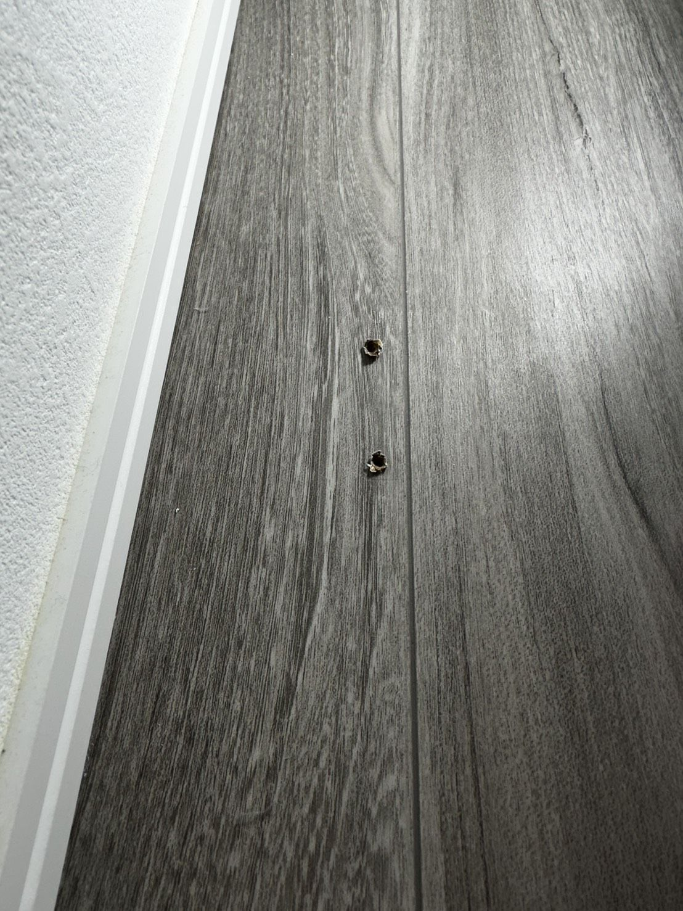
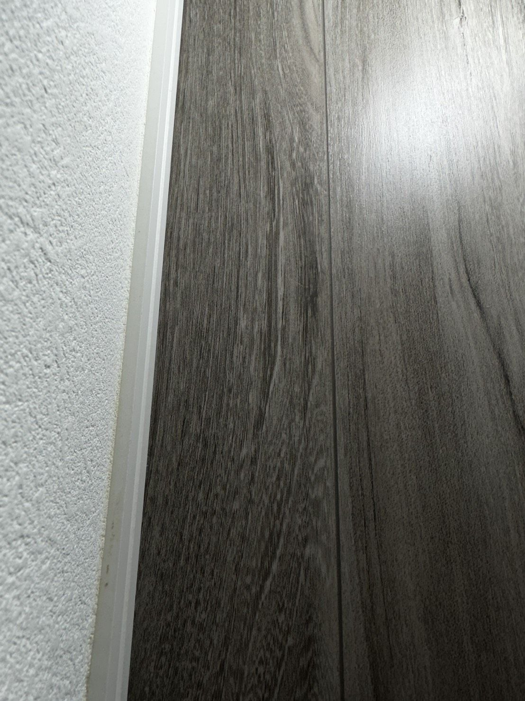
WORK 01
傷を、なかったことに近づける。
相模原発の住宅内装リペア。木部・金属・フローリング・建具・特殊素材まで、 直せるか分からないものも、まずはDMから相談できます。

01
小さく見える傷ほど、素材や場所によって判断が変わります。写真だけでも状態を見ながら、 できることを一緒に整理します。
02
実際のBefore / After写真から、相談できる補修のイメージを確認できます。


WORK 01
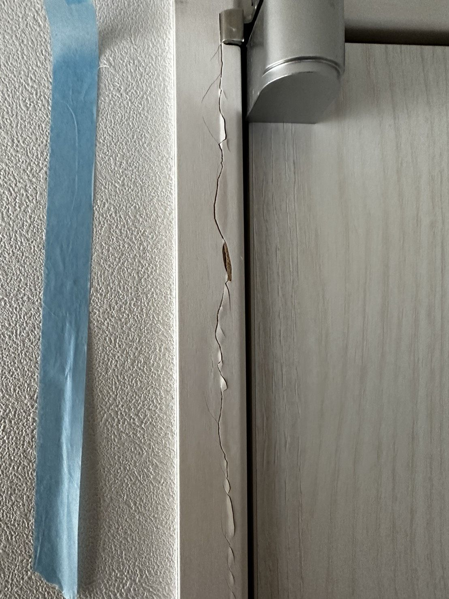
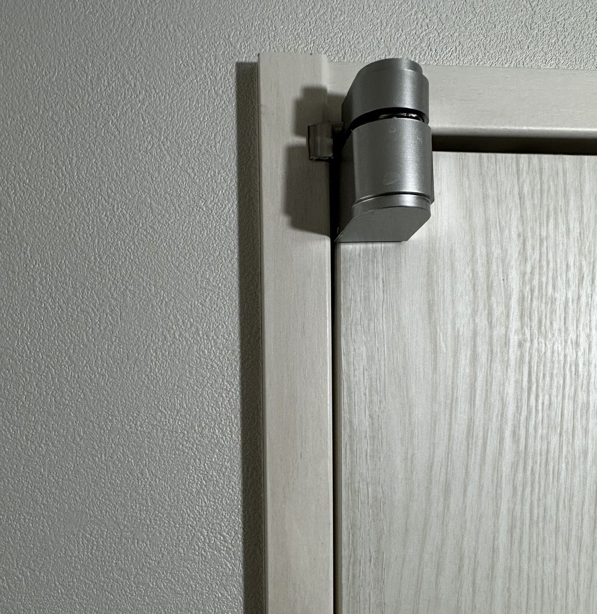
WORK 02
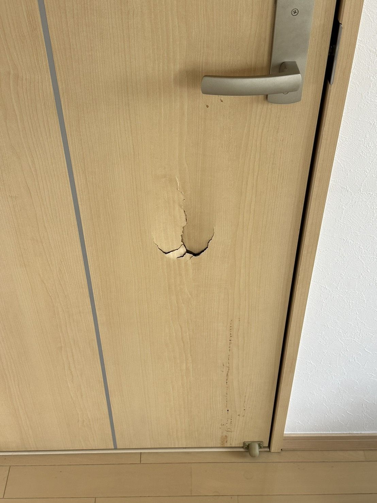
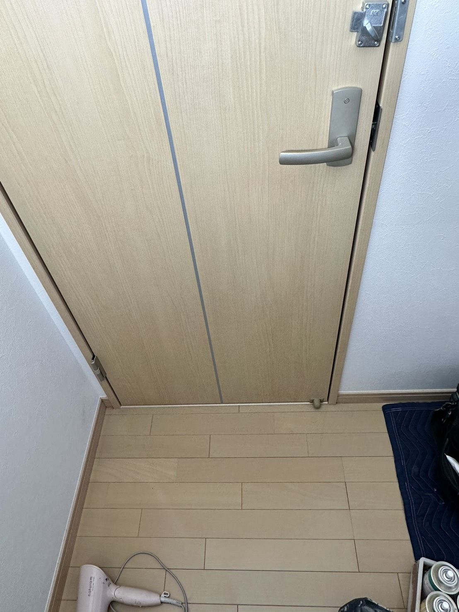
WORK 03
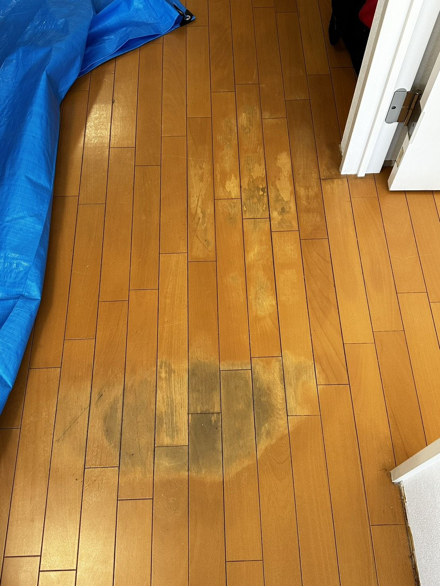
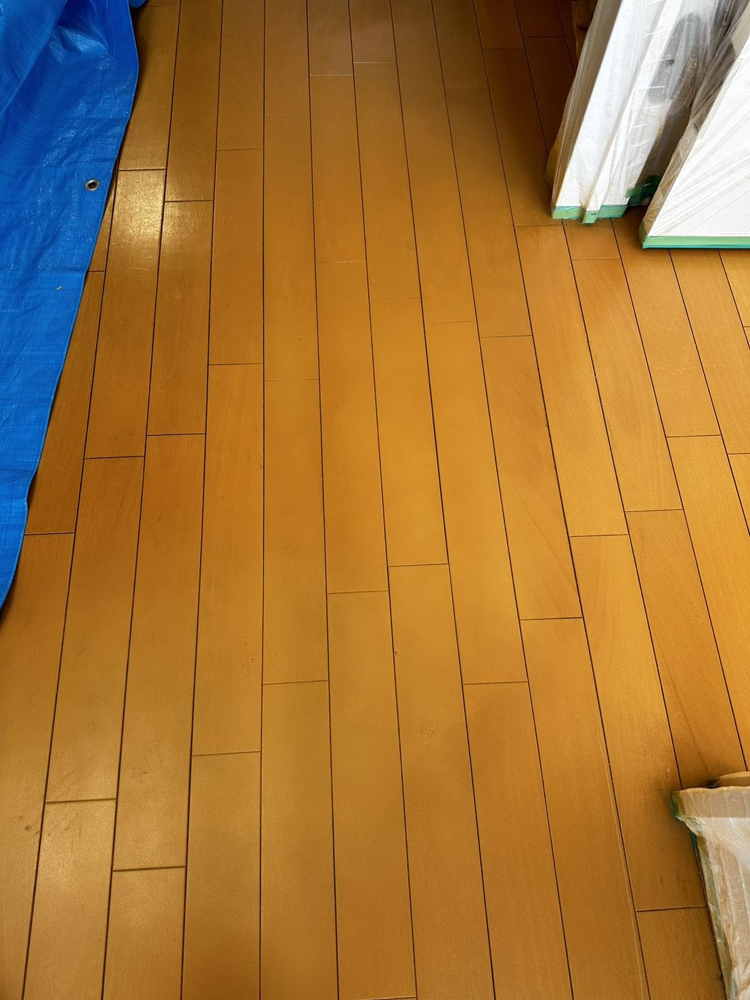
WORK 04
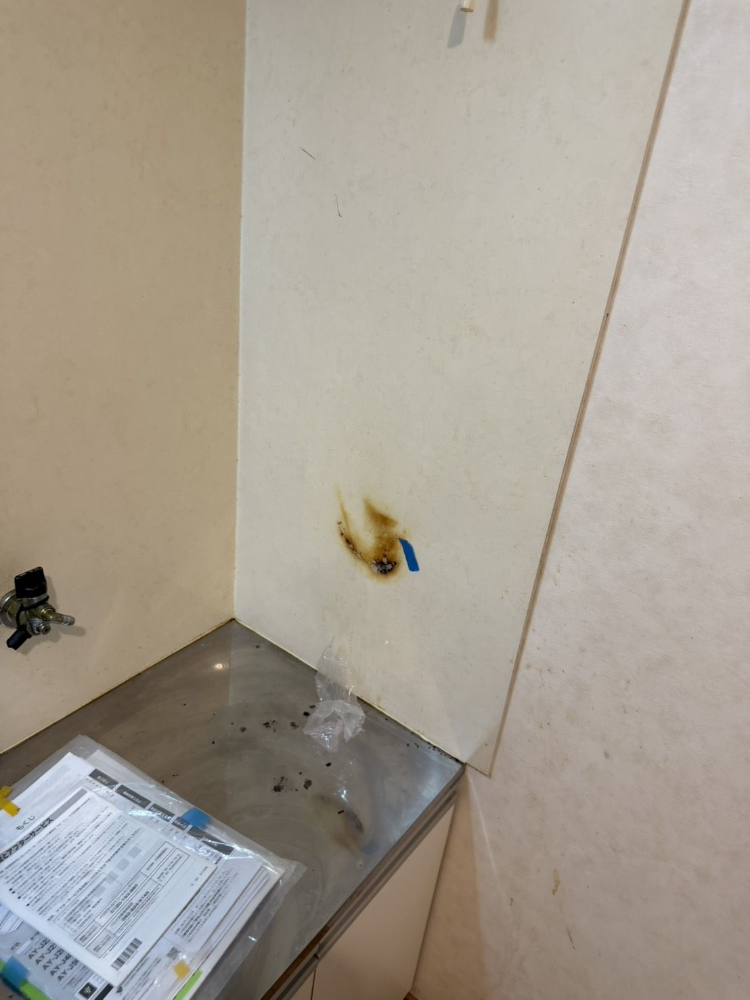
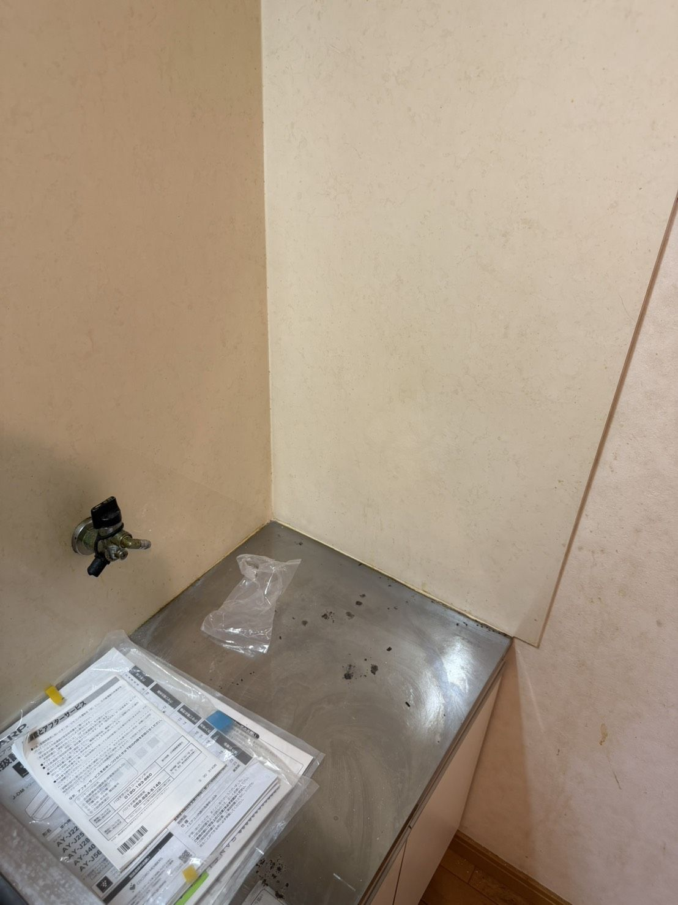
WORK 05
03
23歳で独立。若さを軽さではなく、柔軟さと丁寧な向き合い方として届けることを大切にしています。
早くから現場に立ち、自分の手で信頼を積み重ねる道を選んだリペア職人です。
住宅内装のさまざまな素材や状態を見ながら、現場ごとの判断力を磨いてきました。
直せるか分からないものも、写真を見ながらできる範囲と次の動きを整理します。
目立たなくするだけでなく、周囲の質感や光の見え方まで意識して仕上げます。
04
代表者名：田中佑弥
18歳から職人の道へ進み、前職では設備関係の仕事を通して現場での対応力と社会経験を積む。 その後、住宅リペアという仕事に出会い、素材や傷の状態に合わせて仕上がりを整える技術に惹かれて転職。 3年間、さまざまな住宅内装の補修経験を重ねたのち、Repairctとして独立しました。
若い感性と現場で培った判断力を活かし、写真だけでも相談しやすい、身近で丁寧なリペアを大切にしています。
05
相模原を中心に、神奈川・東京・周辺県まで対応します。交通費は別途ご相談ください。
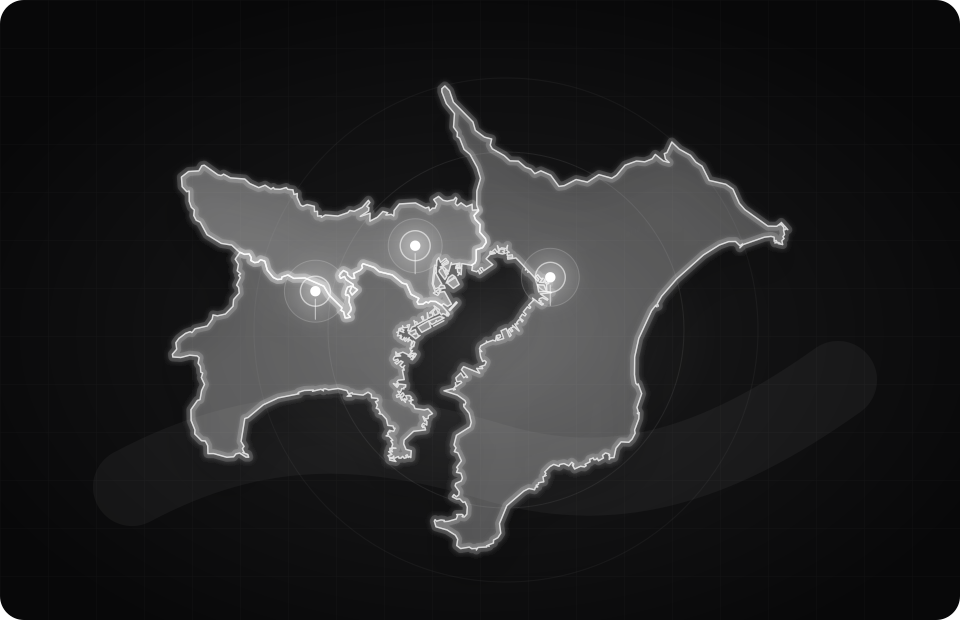
写真だけでも相談可能です。直せるか分からないものも、素材・場所・状態が分かる写真を添えて送ってください。
Instagram DMで相談する写真を添えてDMでご相談ください。